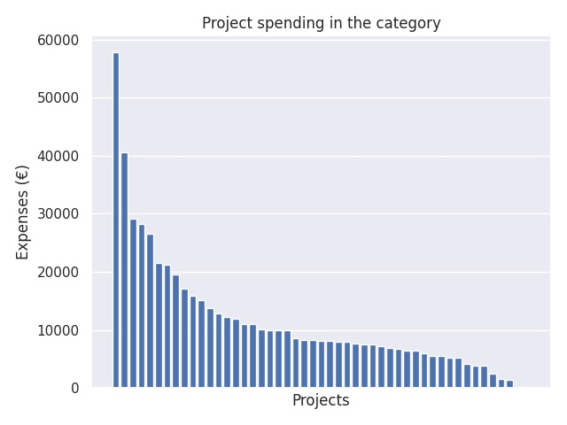

Yleissivistävän koulutuksen kansainvälistyminen, kansainvälistymisen kehittämishankkeet
Category summary
11.5K spent on average
57.8K highest spending

Reports in the category
Jyväskylän koulutuskuntayhtymä/lukiokoulutus
Project name: valtakunnallinen CERN-tiedeopetusverkosto
57.8K spent
Gymnasiet Grankulla stad
Project name: Sharing knowledge - developing skills
40.6K spent
Vantaan kaupunki, Vaskivuoren lukio
Project name: Yanzu - kiinan kieltä lukioissa
29.1K spent
Kvarnen samkommun
Project name: Min berättelse - ett projekt för tolerans och medmänsklighet
28.3K spent
Alajärven kaupunki
Project name: Silta Japaniin - toinen vaihe
26.6K spent
Espoon kaupunki, Espoonlahden lukio
Project name: Pakolaisuus eurooppalaisena ilmiönä - turvapaikanhakijoiden ja suomalaisnuorten aidot kohtaamiset sekä suomalaisnuorten käsityksiä maahanmuutosta
21.5K spent
Raaseporin kaupunki
Project name: Makana10
21.3K spent
Turun yliopisto, Kasvatustieteiden tiedekunta, Turun normaalikoulu
Project name: Ilmiö 2017 – suomalais-virolaista tiimioppimista
19.5K spent
Nurmijärven kunta
Project name: Ippo - Japania lukiossa ja peruskoulussa
17.1K spent
Lukioliikelaitos Tavastia/Koulutuskuntayhtymä Tavastia
Project name: Vesi ja luonto
15.8K spent
Svenska samskolan i Tammerfors
Project name: Religionens roll i det spanska samhället idag och i historien
15.1K spent
Suomen Luterilainen Evankeliumiyhdistys ry/ Karkun evankelinen opisto
Project name: KARATE-hanke (KArkku, RAudaskylä, iTä-hämE)
13.8K spent
Enontekiön kunta
Project name: Tuntureiden lapset maailmalla
12.8K spent
Hangö stad, Hangö gymnasium
Project name: Vårt germanska Europa
12.2K spent
Espoon kaupunki, Innokas-verkosto
Project name: Global Innokas
12K spent
Savitaipaleen kunta
Project name: Karjalan Kannas- uutta ja vanhaa oppimassa
11.1K spent
Toholammin kunta
Project name: Itänaapuri tutummaksi
11K spent
Raahen kaupunki, opetustoimi
Project name: Kulttuurit Kukkimaan
10.1K spent
Kuopion kaupunki
Project name: Kansainvälistyminen osana uuden opetussuunnitelman pedagogiikkaa - Kiina-yhteistyön syventäminen
10K spent
Juvan kunta
Project name: LEAF! - LEArning in Forests!
10K spent
Sodankylän kunta/sivistystoimi
Project name: Meiltä maailmalle
10K spent
Vaasan kaupunki / Vaasan lyseon lukio
Project name: Let´s get global -hanke
8.63K spent
Ylitornion Yhteiskoulun Kannatusosakeyhtiö
Project name: iConnectED
8.34K spent
Lappeenrannan kaupunki
Project name: Keski-Euroopan kieliä ja kulttuuria lukiossakin
8.31K spent
Kajaanin kaupungin koulutusliikelaitos
Project name: Osaajaksi kulttuurikasvatuksen avulla - aktiivinen lukiolainen luovana esimerkkinä
8.21K spent
Turun kaupunki / sivistystoimala
Project name: Enjoy Agricola! - Reformaatiokurssi Turun lukiolaisille
8.09K spent
Oulun Suomalaisen Yhteiskoulun lukio
Project name: Kansallisia rajoja ylittävä yhteistoiminnallinen oppiminen
7.97K spent
Mänttä-Vilppulan sivistystoimi
Project name: Kulttuurikasvatussalkku
7.94K spent
Keravan kaupunki
Project name: Keravan ja Tuusulan koulut kansainvälistyvät
7.67K spent
Lempäälän kunta
Project name: KiKuLi - Kieli ja kulttuuri liikkeelle
7.55K spent
Lappeenrannan kaupunki, Lappeenrannan Lyseon lukio
Project name: Lappeenranta meets India
7.54K spent
Iisalmen kaupunki
Project name: Rakennamme ystävyyttä
7.27K spent
Raseborg stad
Project name: Suomi 100 v - Maisemakuvia Suomesta / Finland 100 år - Panoramabilder från Finland
6.87K spent
Karstulan kunta
Project name: Monipuolista kielitaitoa maaseudun nuorille
6.73K spent
Kouluyhdistys Pestalozzi Schulverein Skolföreningen ry
Project name: Saksan kieli, kansainvälisyys ja uudet opetussuunnitelmat käytännössä
6.46K spent
Joroisten kunta/lukio
Project name: Osuuskunnat yrittäjyyskasvatuksessa Suomessa ja Italiassa
6.4K spent
Oulun kaupungin sivistys- ja kultturipalvelut
Project name: Koulun kansainvälistymisen tukeminen yrittäjyyskasvatuksella
6.01K spent
Pihtiputaan lukio
Project name: Future Leaders Learning Outdoor
5.62K spent
Helsingin Rudolf Steiner -koulun kannatusyhdistys ry
Project name: Kulturen kreuzen - Euroopan pakolaisvirta lukiolaisten silmin
5.51K spent
Tampereen kaupunki/Hatanpään lukio
Project name: Maailma Haluun ja halu maailmalle
5.31K spent
Kaustisen musiikkilukio
Project name: Kaustinen-Johannesburg -soittosilta
5.29K spent
Tampereen kaupunki, Tampereen teknillinen lukio
Project name: Kestävää tulevaisuutta rakentamassa -hanke
4.21K spent
Siuntion kunta
Project name: Minä maailmankansalaisena ja vaikuttajana
3.91K spent
Turun kaupunki
Project name: Aktiivinen maailmankansalainen
3.82K spent
Espoon kaupunki, Latokasken koulu
Project name: Suvaitsevaisuuden ja eri kulttuurien ymmärtämisen kehittäminen kotikansainvälisyyskasvatuksen kautta
2.5K spent
Asikkalan kunta, Vääksyn Yhteiskoulu
Project name: Kirjallisuutta yli ajan ja rajan
1.52K spent
Hyvinkään kaupunki, Opetustoimi, Härkävehmaan koulu
Project name: Maailmankansalaisen koulu
1.39K spent
Turun kaupunki / Vasaramäen koulu
Project name: Life Skills
0 spent
Seinäjoen lukio
Project name: Kansainvälisyyspäivät Seinäjoella 1-2.11.
0 spent